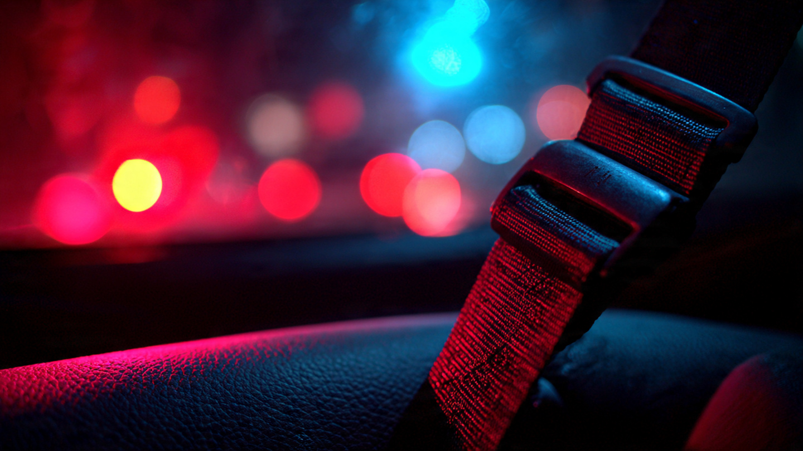

9% of Drivers Skip the Seat Belt. They Account for Half the Dead.

NHTSA observers stood at 1,800 intersections across the country in 2024 and counted who was buckled.[1] The national rate came back at 91.2%, barely moved from the year before, and ninety-one percent sounds like success, until you cross-reference it with the morgue data and realize that the remaining 8.8% of unbuckled occupants generated 49.2% of all passenger vehicle occupant deaths in 2023.[2]
Run the math yourself. If 8.8% of the population produces 49.2% of the fatalities, they are dying at 5.59 times their proportional share. No vehicle design defect, no drunk driving pattern, no infrastructure failure concentrates death this tightly around a single behavior. AEB systems that cost automakers thousands per unit to engineer and validate prevent a fraction of the deaths that a free nylon strap already prevents when someone bothers to pull it across their chest.
Seat belts reduce front-seat car occupant deaths by 45%. For light trucks, that number climbs to 60%.[3] NHTSA's own press materials describe it that plainly. Yet approximately 11,500 people died unbelted last year, out of roughly 23,000 total passenger vehicle occupant fatalities.[4] If every single one of those 11,500 had buckled up and the 45% effectiveness estimate held, that is 5,175 people who would have survived, gone annually because of a two-second action nobody bothered to take.
Who are these 9%? Not a random cross-section: males die unrestrained at significantly higher rates than females. Adults aged 25 to 34 account for the worst demographic slice: 61% of their crash deaths are unbelted.[2] Children aged 10 to 15 match that same grim 61%. Nighttime crashes skew far worse than daytime, and rural roads are a different country entirely: CDC data from a 2014 MMWR study found seat belt use dropped from 88.8% in urban areas to 74.7% in the most rural counties, a gap that has not meaningfully closed.[5]
State enforcement law is the clearest policy lever. Thirty-six states and DC have primary seat belt laws, meaning an officer can pull you over for being unbuckled alone. Those states report 96.2% belt use and 41% of fatalities are unrestrained. Secondary-enforcement states, where police can only ticket an unbuckled driver during a stop for some other violation, show measurably lower compliance and higher unrestrained death shares.[6] New Hampshire has no adult seat belt law at all. Live free or die is the state motto; the FARS data confirms both options are popular.
Then COVID made it worse: unrestrained fatality share jumped from 46.6% in 2019 to 50.9% in 2020, and the recovery has been glacial: 49.2% by 2023.[2] Fewer cars on the road during lockdowns apparently emboldened the people who already treated belts as optional. Speeds went up, belt use went down, and the death concentration ratio widened before slowly regressing toward its pre-pandemic baseline.
The strongest counterargument is selection bias, and it deserves its full weight. People who skip seat belts tend to also speed, drive impaired, and drive older vehicles on worse roads at worse hours. The belt refusal is a symptom of a broader risk profile, not necessarily the sole proximate cause of each death. Some percentage of these 11,500 unbelted fatalities would have died even if restrained, because they were in unsurvivable impacts driven by their other risk behaviors. NHTSA's 45% effectiveness figure is an average across all crash severities; at the extremes, nothing helps. This is a real limitation of the concentration ratio: it captures correlation, not clean causation, and the interventable share is smaller than the raw 5,175 number suggests.
But a smaller share of 11,500 is still thousands. And the policy response is not complicated, because primary enforcement works and the evidence is overwhelming. States that upgraded from secondary to primary belt laws saw immediate, measurable jumps in compliance. Pickup trucks remain the lowest-compliance vehicle category at roughly 89% belt use; their drivers are also disproportionately male, rural, and in the 25-to-34 age bracket that already has the worst unbelted death rate. That is not coincidence but rather a demographic cluster where a targeted enforcement campaign would move the needle more than any ADAS feature shipping in 2027.
What you should do: Buckle up. That sounds obvious enough to be insulting, so try the version that matters: buckle up your rear-seat passengers, especially teenagers, because rear-seat belt compliance is roughly 10 percentage points lower than front-seat and rear occupants in a frontal crash become projectiles that kill the people in front of them. If you drive a pickup, you are statistically the least likely reader to be wearing your belt right now. If you live in a secondary-enforcement state, your state legislature is the chokepoint: primary enforcement laws are the single most cost-effective intervention available, costing taxpayers essentially nothing while saving hundreds of lives annually per state that adopts them, so contact your representative. And if you are in New Hampshire, well, the motto already told you the stakes.
Sources & References
- NHTSA, National Occupant Protection Use Survey (NOPUS), 2024. National observed seat belt use rate: 91.2%. nhtsa.gov
- National Safety Council, Injury Facts: Seat Belts, 2024. 49.2% of passenger vehicle occupant fatalities (2023) were unrestrained; age and gender breakdowns. injuryfacts.nsc.org
- NHTSA, Click It or Ticket: Seat Belt Effectiveness. Belts reduce front-seat car deaths by 45%, light truck deaths by 60%. nhtsa.gov
- NHTSA, 2024 FARS Annual Report & 2025 Early Estimates. 39,345 total traffic fatalities in 2024 (1.20 per 100M VMT). nhtsa.gov
- CDC MMWR, Rural Health Disparities in Motor Vehicle Crash Death Rates, 2014. Belt use declines from 88.8% (urban) to 74.7% (most rural). cdc.gov
- NSC Injury Facts, Seat Belt Use by State Law Type. Primary-law states: 96.2% compliance, 41% unrestrained fatality share. 36 states + DC have primary enforcement. injuryfacts.nsc.org
Source: NHTSA NOPUS 2024, NHTSA FARS 2014–2023, NSC Injury Facts 2024, CDC MMWR 2014. The 5.5× concentration ratio divides unrestrained fatality share (49.2%) by unrestrained population share (8.8%); this is an ecological comparison, not an individual-level causal estimate. Belt effectiveness figures (45%/60%) are NHTSA averages across all crash severities. See methodology for caveats.